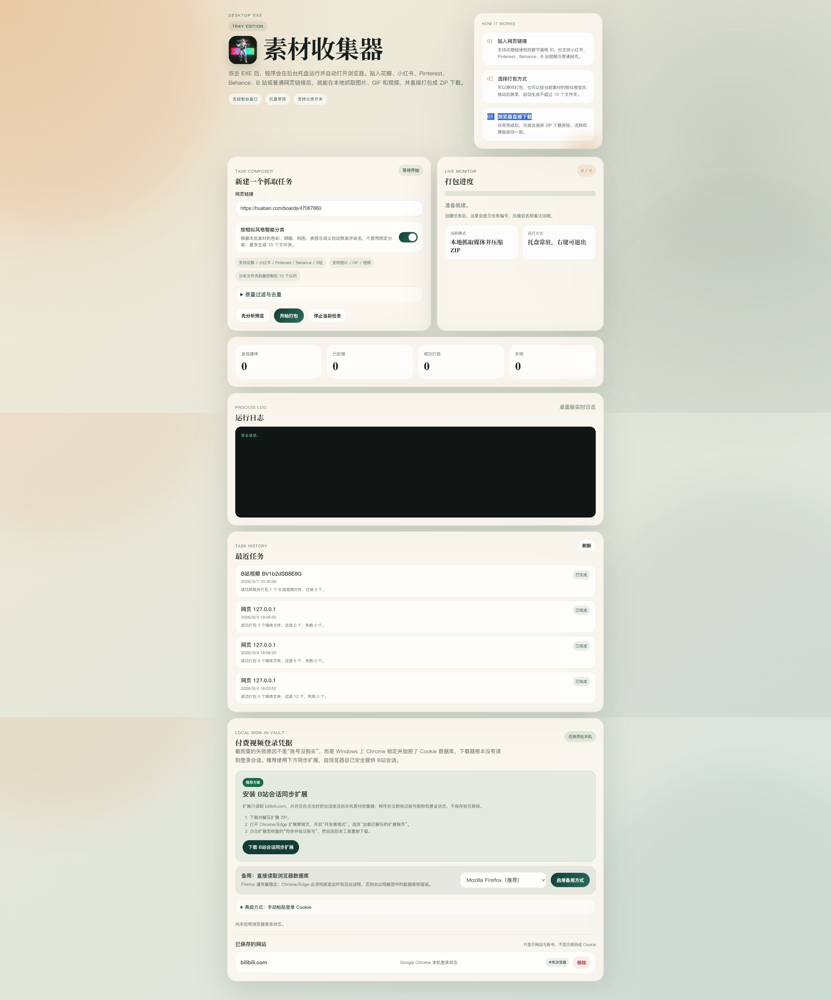

MATERIAL COLLECTOR / WEB + WINDOWS
素材收集器 在线工作台
粘贴视频网页链接在线提取；也可导入图片、GIF 和视频，一次打包。
在线视频提取
粘贴网页链接，选择画质下载
B站 · Twitter / X · Vimeo · Pinterest · 抖音 · 小红书
拥有 B站大会员？检查原视频的 4K / 1080P 画质
提取视频：优先在线解析，来源拒绝云端访问时自动尝试企业通道。企业解析会通过当前网络将视频链接发送给 Video Catch，需要能访问公司服务，无需下载客户端。
公开可访问的视频可直接尝试在线解析，无需下载客户端。不同平台受登录、地区和反爬限制，解析结果以来源实际返回为准。
在线服务器被来源网站拒绝
已尝试在线解析与企业备用通道。请确认当前网络可以访问 Video Catch，再点击“提取视频”重试；也可使用本地完整版。
不读取你的浏览器登录信息。已购、会员视频与需要登录的内容，请使用下方本地完整版及本人账号权限。
添加素材
直链需要来源允许跨域读取。HTML 导入会提取素材地址；视频网页链接请使用上方“在线视频提取”；本区域只导入素材文件直链。
筛选与导出
尚未导入素材。文件在浏览器内处理。
网页版适合素材整理，不自动保留历史。原版的网站采集、相似图去重、自适应分类、历史任务与 B站功能均保留在完整包中。
本地完整版如何使用？
下载后完整解压，双击 MaterialCollector.exe（可能位于包内子目录）。无需安装 Python，保留 tools 文件夹。程序启动后按其提示打开本地工作台；B站已购内容按原版提示安装 browser-extension 并同步本人账号。下载权限取决于账号和来源网站。
WINDOWS / FULL EDITION
把完整的素材工作台带到电脑上
链接采集、预览筛选、分类打包、任务记录与 B站会话同步，在一个工作台里完成。

喜欢这套工作台？下载后就能开始。
约 89 MB · 完整解压后双击 MaterialCollector.exe · 无需安装 Python